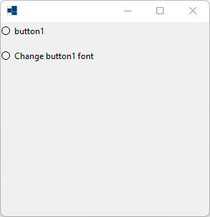
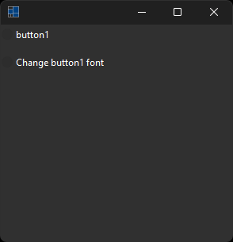
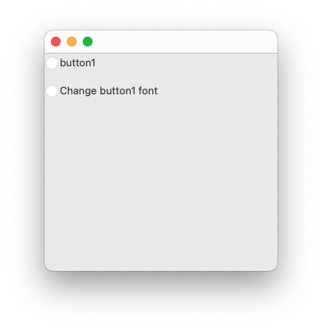
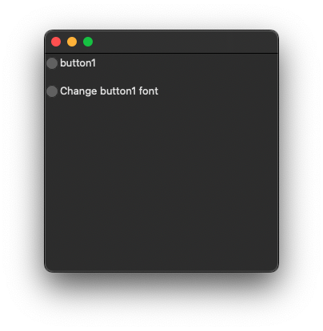
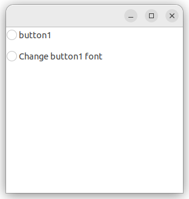
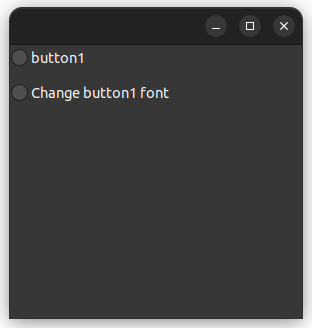

|
xtd
0.2.0
|
font_changed_event.cpp
demonstrates the use of idle event.
- Windows
- 

- macOS
- 

- Gnome
- 

#include <xtd/forms/application>
#include <xtd/forms/form>
#include <xtd/forms/message_box>
#include <xtd/forms/radio_button>
using namespace xtd;
using namespace xtd::forms;
namespace font_changed_event_example {
public:
form1() {
radio_button1.location({0, 0});
radio_button1.name("radio_button1");
radio_button1.size({180, 25});
radio_button1.text("button1");
radio_button2.location({0, 39});
radio_button2.name("radio_button2");
radio_button2.size({180, 17});
radio_button2.text("Change button1 font");
radio_button2.checked_changed += event_handler(*this, &form1::radio_button2_checked_changed);
client_size({292, 273});
controls().push_back_range({radio_button1, radio_button2});
name("Form1");
}
private:
}
radio_button1.font({radio_button1.font().font_family(), 15.0f, drawing::font_style::bold | drawing::font_style::italic, drawing::graphics_unit::point, 0});
}
radio_button radio_button1;
radio_button radio_button2;
};
}
auto main()->int {
application::run(font_changed_event_example::form1 {});
}
static void run()
Begins running a standard application message loop on the current thread, without a form.
generic_event_handler<> event_handler
Represents the method that will handle an event that has no event data.
Definition: event_handler.h:32
xtd::forms::style_sheets::control form
The form data allows you to specify the box of a form control.
Definition: form.h:21
@ point
Specifies a printer's point (1/72 inch) as the unit of measure.
The xtd::forms namespace contains classes for creating Windows-based applications that take full adva...
Definition: about_box.h:13
The xtd namespace contains all fundamental classes to access Hardware, Os, System,...
Definition: system_report.h:17
Generated on Sun Oct 1 2023 07:46:00 for xtd by Gammasoft. All rights reserved.